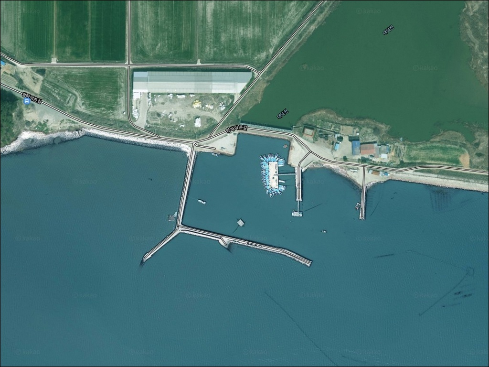
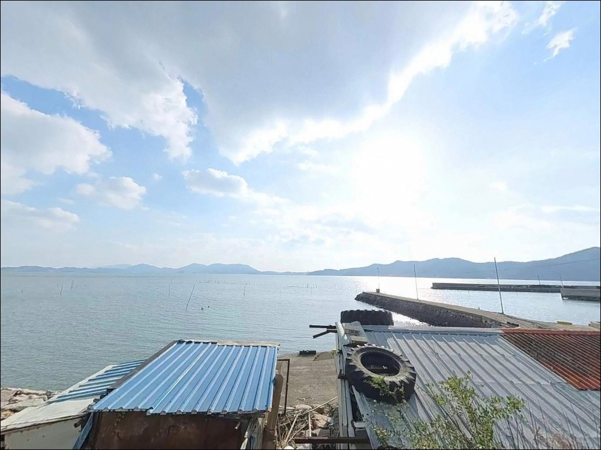
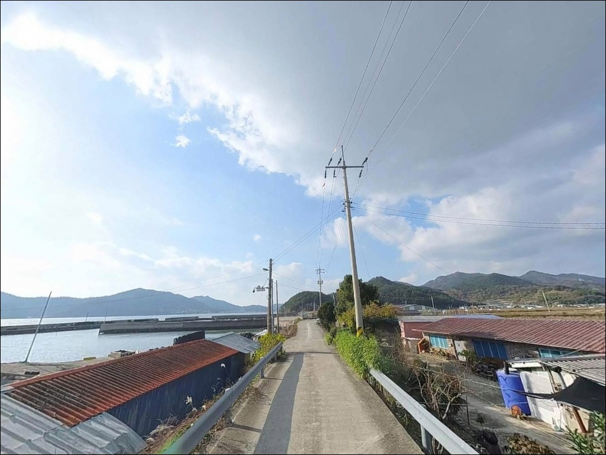
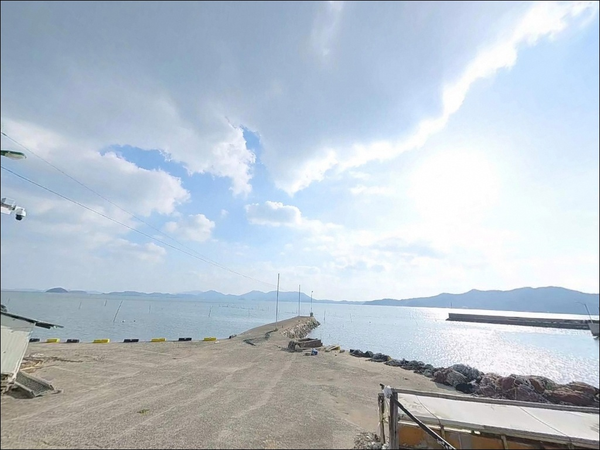
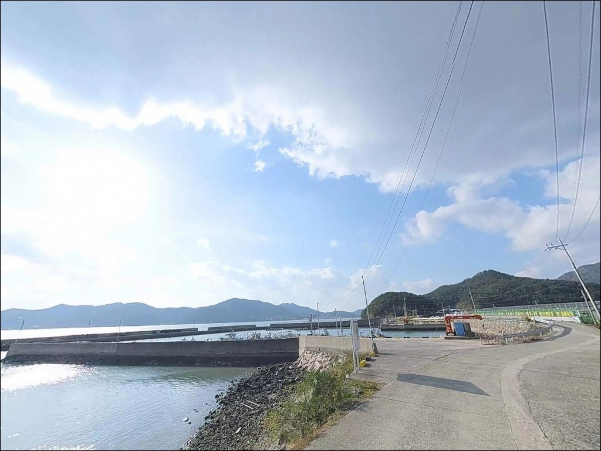
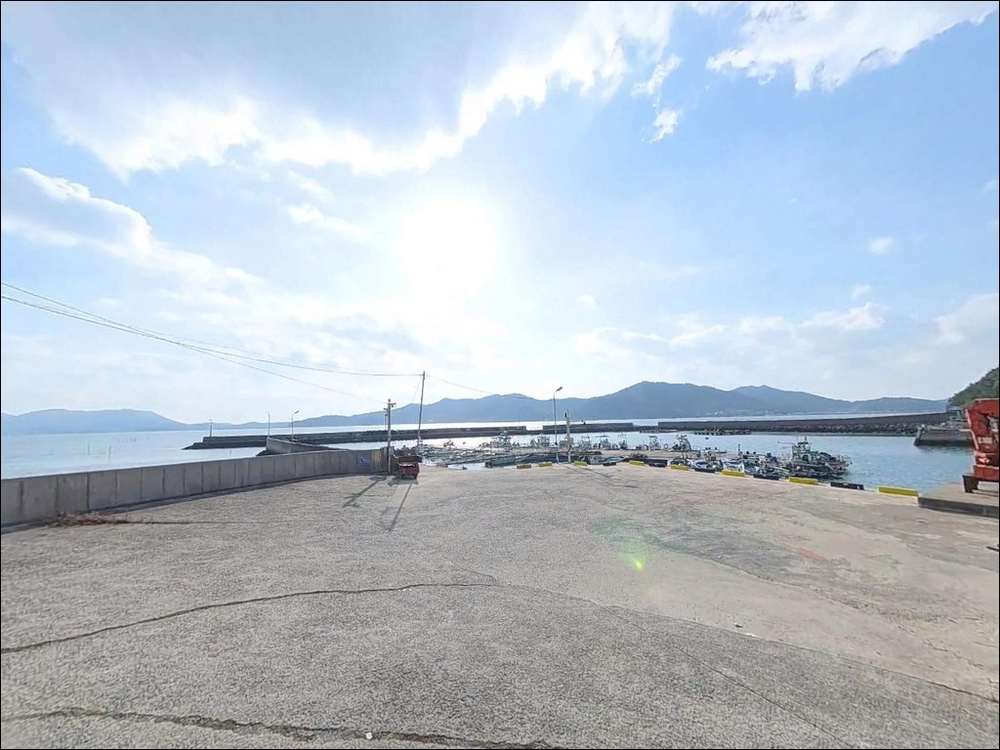
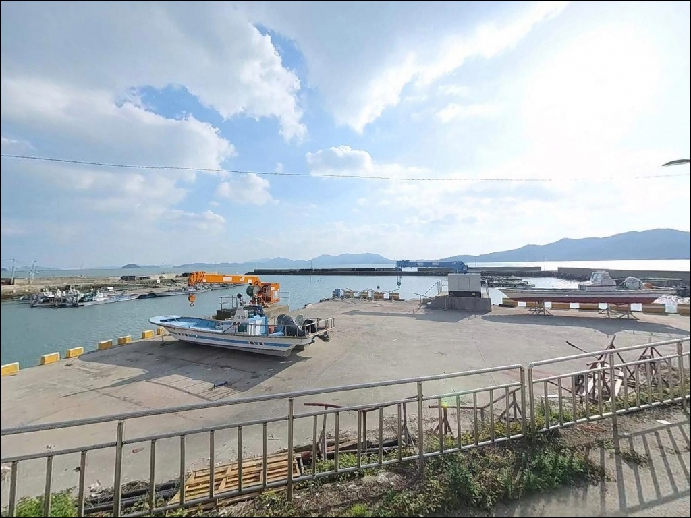
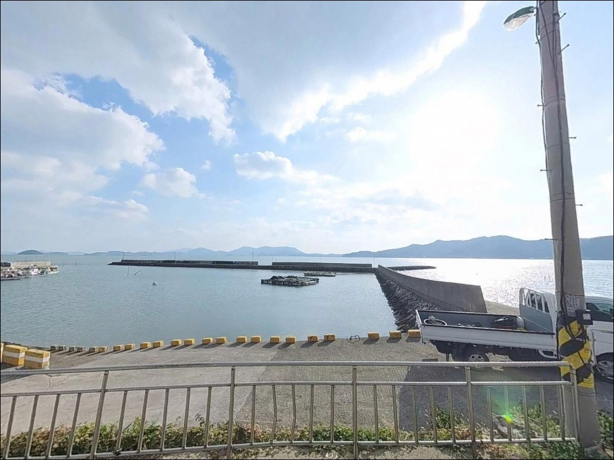
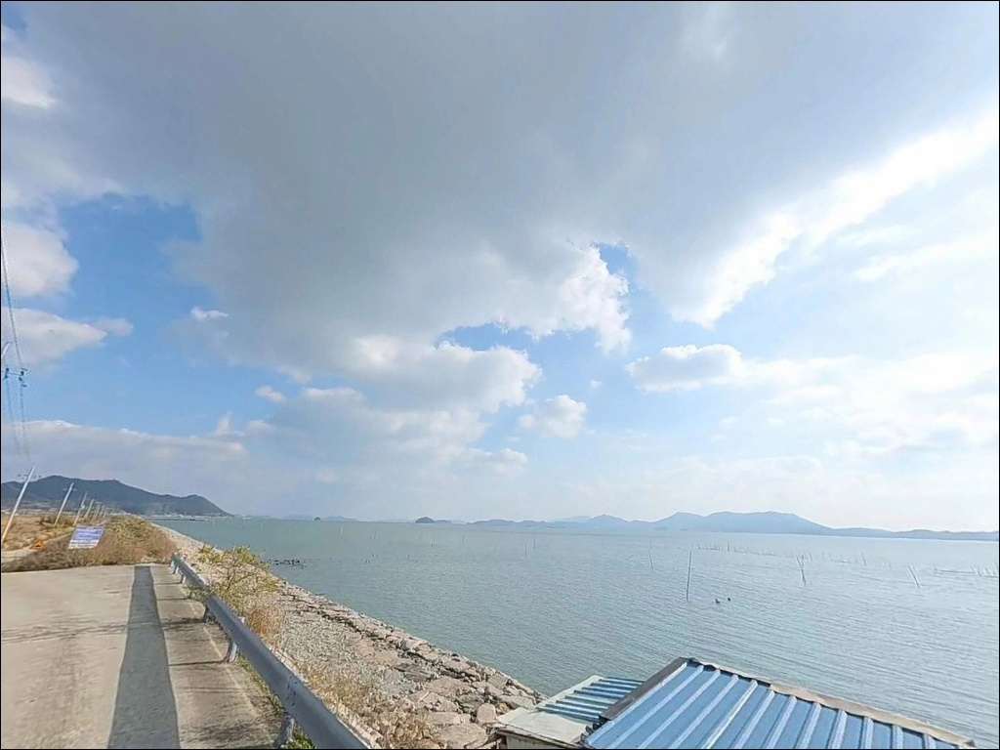

이 페이지에는 광고(제휴 링크 포함)가 있으며, 광고 링크를 통해 구매하면 운영자가 판매 수익 또는 수수료를 받을 수 있습니다. 포인트 사진: 카카오맵 스카이뷰·로드뷰. 이 페이지의 지도·사진 이미지는 카카오맵의 실제 서비스 이미지와 다를 수 있습니다.

덕촌항
전남 장흥군 대덕읍 잠두리 1023
득량만은 전남 남해에서도 조류 패턴이
비교적 규칙적으로 형성되는 내만입니다.
덕촌항은 그 서안에 자리한 소규모 지방어항으로,
외해 너울이 직접 들어오지 않는 구조 덕분에
날씨에 비교적 영향을 덜 받는 실전형 포인트입니다.
그러나 내만 특성상 들물·썰물 타이밍에 따라
조류 흐름이 크게 달라지므로,
물때표 없이 무작정 방문하면 원하는 조건을 만나기 어렵습니다.
이 글은 덕촌항의 지형 구조와 진입 여건,
물때 기반 낚시 공략 타이밍, 차박 체류 조건에 집중합니다.
조황 단정이나 특정 어종 보장은 이 글의 범위에 포함되지 않습니다.

대덕읍 소재지에서 잠두마을 방향으로 이어지는
지방도를 따라 덕촌항에 접근합니다.
진입로는 전 구간 포장 상태이며,
폭은 왕복 1~1.5차선 수준의 해안 소로로
연결되는 구간이 있습니다.
일반 승용차나 소형 SUV 기준으로는
통행에 큰 어려움이 없는 수준이지만,
대형 캠핑카나 장축 캠퍼 차량이라면
출발 전 위성지도로 진입로를 확인하는 것이 안전합니다.
항 내부는 선착장 끝단과 입구 공터에서
차량 회차가 가능한 공간이 확보되어 있습니다.
주차는 방파제 입구에서 선착장 사이
항내 공터를 주로 활용하며,
승용차 기준 2~5대 정도 세울 수 있는
평탄한 공간이 있습니다.
어선 작업 동선과 겹치지 않는 자리를
먼저 확인하고 주차하는 것이 기본 매너입니다.
진입로 시작 지점 해안 갓길에도
도로 폭이 허용되는 구간에서 주차가 이루어지는 편이며,
방파제 인근에서 낚시 자리까지의 이동 거리가 짧아
장비를 많이 챙겨야 하는 원투낚시에도
불편함이 크지 않은 구조입니다.

덕촌항 일대는 잠두마을 어촌 분위기가 그대로 유지되는 곳입니다.
민가가 드문드문 분포하며 야간 차량 통행은 거의 없는 편이라,
낚시를 마치고 조용히 하룻밤 머무는 용도로는
나쁘지 않은 환경입니다.
방파제 시설용 가로등이 설치되어 있어
항내는 기본 조명이 확보되지만,
방파제 외측은 개인 헤드랜턴이 없으면 이동이 불편합니다.
득량만 내만 구조라 외해 너울이 직접 들어오지 않아
강풍 시에도 파도의 직접 영향은 비교적 제한되는 편입니다.
다만 사방이 트인 지형 특성상
바람은 방향에 따라 체감이 달라지므로
기상 예보를 당일 아침에 다시 확인하는 것이 좋습니다.
주차 공간이 넓지 않아 여러 차량이 동시에 차박을 하기에는
자리 여유가 크지 않습니다.
민가와 인접한 구조라
완전한 격리감보다는
조용한 어촌 마을 분위기 안에서 머무는 형태입니다.
야간 낚시 시 소음이 주변에 전달될 수 있으므로
심야 시간대 행동에 배려가 필요한 포인트입니다.

덕촌항 반경 1~3km 내에는
편의점이나 식당을 기대하기 어렵습니다.
식수, 얼음, 낚시 소품, 연료 모두
출발 전에 갖추거나
대덕읍 시내에서 미리 조달해야 합니다.
대덕읍 소재지까지 거리는 차로 약 10분 내외 수준이며,
하나로마트, 편의점, 식당, 주유소가
읍내에 집중되어 있어 보급은 어렵지 않습니다.
낚시 전문점이 필요하다면
회진면 방향으로 이동하는 것이 효율적입니다.
회진항 일대는 장흥군 남부 낚시 거점으로
낚시 용품 관련 수요를 어느 정도 해소할 수 있습니다.
응급 상황 대비 의약품과 비상 물품은
현장 진입 전에 반드시 챙겨야 하는 기본 준비사항입니다.

덕촌항 방문 전 가장 먼저 확인할 것은 물때입니다.
득량만은 조류가 만조·간조를 기준으로
천천히 드나드는 내만형 구조입니다.
들물 초입~중들물 타이밍이 가장 활성도가 올라오는 시간대이며,
바다타임에서 대덕읍 일대 물때를 확인하고
진입 시각을 맞추는 것이 기본 전략입니다.
사리 전후에는 조류 흐름이 강해지므로
채비 선택에 유의하는 것이 좋습니다.
방파제 외측과 끝단에서 낚시할 때는
구명조끼를 반드시 착용해야 합니다.
방파제 끝단에는 난간이 없는 구간이 있어
야간 이동 시 추락 위험이 있습니다.
헤드랜턴과 미끄럼 방지 신발은 야간 출조의 기본 장비입니다.
기상 악화 예보 시에는 조기 철수를 판단 기준으로 삼아야 하며,
풍속 10m/s 이상 예보가 확인되면 출조를 자제하는 편이 안전합니다.
바닥이 모래·펄 혼합 지형이라 밑걸림은 적은 편이지만,
원투 채비의 봉돌 무게는 조류 세기에 맞춰
여유 있게 준비하는 것이 좋습니다.
어민 작업 공간과 어구는 절대 방해하지 않는 것이
어항 낚시의 기본 매너입니다.

덕촌항의 핵심 지형 조건은
득량만 내만이라는 위치에 있습니다.
동쪽 고흥반도와 서쪽 장흥·강진 해안선이
만을 감싸는 반폐쇄형 구조 덕분에
외해 너울이 직접 들어오지 않아
파도의 직접 영향이 제한됩니다.
방파제는 외항 방향으로 뻗어 내항과 외항을 구분하며,
방파제 외측에는 테트라포드가 설치된 구간이 있습니다.
수심은 내항 쪽 얕은 구간에서
방파제 끝단 외측으로 나갈수록 깊어지는 구조입니다.
내항은 간조 기준 2~4m 내외의 완만한 수심이 형성되며,
방파제 끝단 외측은 4~6m 이상으로 깊어지는 구간이
핵심 공략 지점입니다.
바닥 지형은 모래·펄 혼합으로 밑걸림이 적어
원투 채비를 바닥에 눕혀 기다리는 방식에 유리합니다.
조류는 만조·간조를 기준으로
천천히 드나드는 내만 패턴이 유지되며,
방파제 끝단에서 조류 변화가 가장 두드러집니다.
이 구간이 낚시 효율이 가장 높은 자리이기도 합니다.
최신 조황은 출조 전 반드시 검색해 확인하시기 바랍니다.

이 포인트에서 가장 잘 맞는 낚시는 원투낚시입니다.
모래·펄 혼합 바닥에 밑걸림이 적어
봉돌을 바닥에 세팅하는 방식이 안정적이며,
방파제 끝단 외측과 외항 측면을 겨냥해 캐스팅하면
바닥층 어종을 노리기에 알맞은 조건이 갖춰집니다.
들물 타이밍에 맞춰 채비를 넣으면
조류 흐름을 타는 어종의 입질 가능성이 올라옵니다.
찌낚시도 이 포인트 구조에 잘 맞는 방식입니다.
내만 특성상 조류가 느리게 흘러
채비 컨트롤이 비교적 수월한 편이며,
방파제 콧부리와 내측을 따라 흘리는 방식이
만조 전후 시간대에 유효합니다.
장흥군이 이 일대에 감성돔 치어를 꾸준히 방류해
개체수 증가 추세가 이어지고 있으며,
가을~이른 봄이 활성도가 높은 시기입니다.
야간에는 가로등이 닿는 방파제 내측에서
소형 루어나 소프트베이트를 운용하는
라이트게임을 시도해 볼 수 있습니다.
명암 경계선 주변이 농어·볼락 탐색에 유효한 구간이며,
하절기 야간에는 풀치 반응도 기대해볼 수 있습니다.

덕촌항에서 조류가 맞지 않거나
주차 여건이 여의치 않을 때는
신약리 선착장이 첫 번째 대안입니다.
덕촌항에서 동쪽으로 약 3km 거리에 위치하며,
비슷한 수로형 지형을 갖추고 있어
낚시 환경이 유사한 편입니다.
좀 더 규모 있는 포인트를 원한다면
회진항 방향으로 이동하는 것이 효율적입니다.
덕촌항에서 약 10~15km 거리의 국가어항으로,
주차 여건이 넓고 인프라가 안정적이며
감성돔·농어 출현이 확인된 해역입니다.
소음은 덕촌항보다 더 있는 편이지만,
처음 이 해역을 찾는다면
회진항을 기점으로 잡고 덕촌항을 병행 탐색하는 동선이
현실적입니다.
정남진 해양낚시공원도 검토해볼 만한 대안입니다.
회진면 소재의 공식 낚시 시설로,
데크형 구조라 안전성과 접근성이 뛰어납니다.
수·목·금·토·일 운영(월·화 휴장)이므로
방문 전 요일과 운영 일정을 미리 확인하는 것이 좋습니다.

원투낚시나 찌낚시를 즐기는 낚시인이라면
덕촌항의 지형 조건은 잘 맞는 구조입니다.
내만 특성상 날씨에 덜 민감하고
밑걸림이 적은 바닥 지형이라
채비 손실 부담도 크지 않은 편이며,
장흥군 일대 감성돔 방류 효과가
이 해역 전체에 긍정적인 영향을 주고 있습니다.
반면 편의시설이 항 주변에 없고
대덕읍 시내까지 나가야 보급이 가능한 구조라,
사전 자급 체제 없이 방문하면 불편함이 큽니다.
물때 확인, 자급 준비, 진입로 사전 점검,
이 세 가지를 갖추고 들어가면
조용한 득량만 안에서 집중하기 좋은
실전형 낚시 자리가 기다리고 있습니다.
차박도 병행하고 싶다면
국립공원 구역 저촉 여부와 주차 공간 여건을
미리 확인한 뒤 진입하는 것이 안전합니다.
잠두마을 어촌 분위기 안에서
원투 채비 하나 들고 물때를 기다리는 낚시 여정으로
기억될 수 있는 포인트입니다.